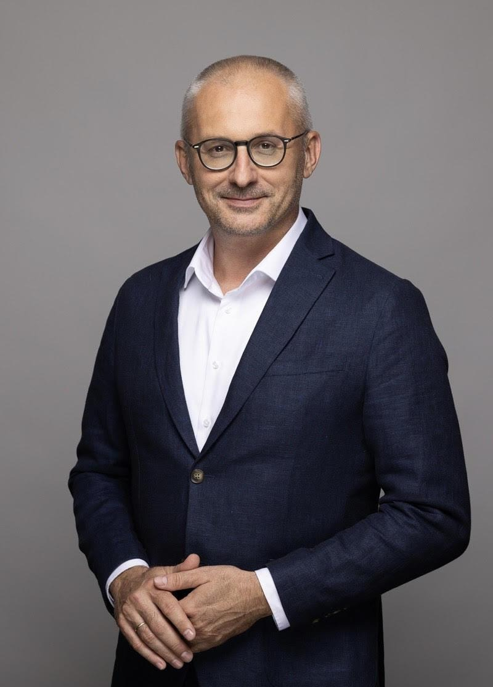
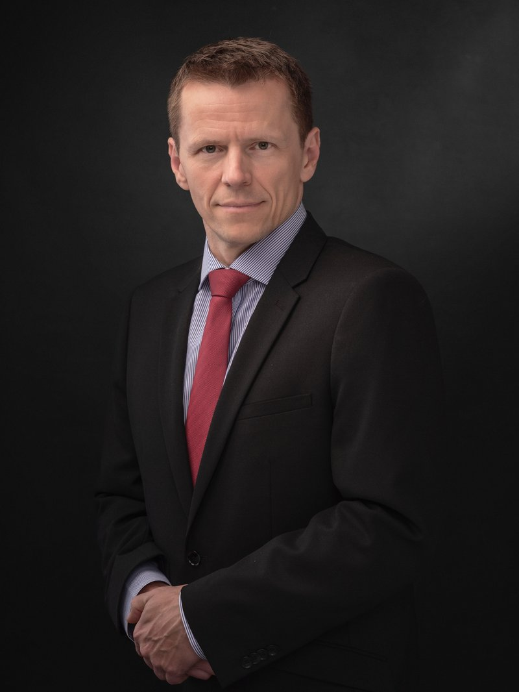

Ekonomika, dlh a udržateľná správa vecí verejných pod lupou dvoch popredných expertov.


Počet miest je obmedzený. Registrácia je nutná na vstup do areálu Univerzity Karlovy.
Hrozí Slovensku osud Grécka? Narastajúci dlh, nedostatočné reformy a krehká správa vecí verejných otvárajú otázky, na ktoré spoločne hľadáme odpovede. Diskusia je súčasťou programu pre slovenských študentov v Česku — prepájame akademické prostredie s tvorbou verejných politík.
Projekt v partnerstve s Fakultou sociálních věd a 1. lékařskou fakultou Univerzity Karlovy, ktorý dopĺňa študentský program o akademický rozmer — ko-supervíziu výskumných výstupov, prepojenie policy práce so štúdiom a prístup k inštitucionálnej infraštruktúre UK. Umožňuje štruktúrovaný mentoring a tvorbu prenositeľného modelu zapájania diasporovej mládeže do tvorby verejných politík.
Projekt v spolupráci s INESS a Pražskou kaviarňou, ktorý zapája slovenských študentov v Česku priamo do činnosti a organizácie aktivít think-tanku. Študenti pracujú v odborných tímoch (zdravotníctvo, školstvo, verejné financie, decentralizácia) pod vedením seniorných expertov v pomere 1 : 4, pripravujú analytické podklady, organizujú podujatia a podieľajú sa na komunikácii. Aktívni študenti môžu získať finančný príspevok, potvrdenie o praxi a mentoring pre kariérny rast.
Metro B — zastávka Jinonice. Areál FSV UK je priamo pri výstupe z metra.
Areál UK je prístupný iba v čase 17:20 – 17:30. Príďte včas — po 17:30 nebude možné vstúpiť.
Predstavenie projektu študentom (riaditeľ FSF Dávid Bořuta), krátke prezentácie rečníkov a študentmi moderovaná diskusia — Slido aj priame otázky z publika.